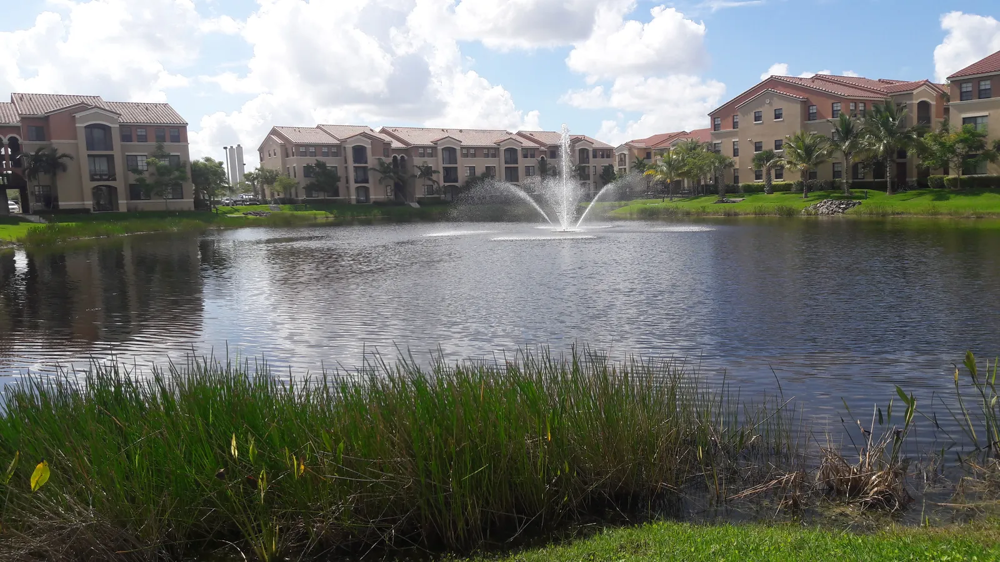

Homes for sale in Doral are mostly townhomes, condos and single-family houses in planned communities, plus newer mid-rise buildings in Downtown Doral. It's an inland city next to Miami International Airport, with an economy built around trade and business. HOA rules and fees vary a lot from one community to the next, so they belong in the budget from day one. Rui Cunha's office is in Deerfield Beach, and he works with buyers across Florida, including Doral.
What it's like to live in Doral
Doral is a young city: it incorporated in 2003 and sits just west of Miami International Airport (Wikipedia). Florida's Office of Economic and Demographic Research estimated its population at 82,175 as of April 2024, up about 1% in a year, the fastest growth of the Miami-Dade cities we cover (Florida EDR). Because it's so close to the airport, Doral is home to many importers and exporters, and Carnival Corporation is headquartered here. It's also home to the Trump National Doral golf resort. The city has a strong Latin American identity: Venezuelan was the largest reported ancestry group in 2020 data, at about 39% of residents (Wikipedia).
Neighborhoods and communities
- Downtown Doral. The city's newer urban core, with condos, townhomes, shops and restaurants within walking distance (Wikipedia).
- CityPlace Doral. A mixed-use area on the east side of the city.
- Doral Isles. A gated community built around lakes, with a clubhouse and pools (Units Storage).
Each community has its own HOA, amenities and rules. Rui can compare recent sales and fees across the communities you're considering.
Doral market snapshot
According to Zillow, the typical home value in Doral was about $543,000 in August 2026, about 1% lower than a year earlier (Zillow Home Value Index). That index blends condos, townhomes and houses.
A flat market can be a good time to negotiate, but compare the full monthly cost, not just the price: HOA fees, any condo assessments and insurance can make two similar homes very different. Ask Rui for a current comparison of recent sales for what you're actually considering.
Practical notes: HOA, condos, insurance and rentals
HOA and community rules. Most Doral homes are in communities with a homeowners or condo association. Before you offer, read the rules on leasing, pets, parking and renovations, and ask for the current budget and any planned assessments.
Condo safety rules. Florida's 2022 condo safety law requires milestone inspections for buildings of three or more stories (at 30 years, or 25 if the local building department requires it, then every 10 years — SB 154, 2023) and a Structural Integrity Reserve Study with funded reserves (Rimkus). Ask for the reserve study and inspection status for any condo building.
Flood and insurance. Doral is inland, but much of South Florida is low and flat, and flood zones vary by street. Citizens policyholders must carry flood coverage as that requirement phases in through 2027 (News4JAX). Check the flood zone and get insurance quotes before signing.
Rentals. If you plan to rent, the association decides much of what you can do: communities can set minimum lease terms and require tenant approval, so confirm the rules before counting on rental income.
Homestead. If the home will be your primary residence, ask a CPA about Florida's homestead exemption. Second homes and non-residents don't qualify.
Schools
Doral is served by Miami-Dade County Public Schools, including Ronald W. Reagan/Doral Senior High, and has well-known charter schools such as Doral Academy and the Downtown Doral charter schools (Wikipedia). Downtown Doral Charter Elementary opened in 2015 with a Spanish and Portuguese language program (Miami Today, 2017). Confirm current programs, admission rules and assigned schools for any address.
Getting around
Doral is bordered by major highways and sits next to the airport, which makes travel easy but traffic heavy at rush hour. Drive your commute at peak times before you choose a community.
Working with Rui in Doral
Rui has worked in South Florida real estate since 2003, as a mortgage broker, a broker and a licensed General Contractor, so he can read an HOA budget or an inspection report with a practical eye. His office is in Deerfield Beach, and he works with clients all over Florida. He can help you buy a home, look into an ITIN mortgage or plan a purchase as an international buyer. Use the mortgage calculator to include HOA fees, taxes and insurance, and compare with Coral Gables and Miami.
FAQ
How much does a home cost in Doral?
Zillow put the typical home value in Doral at about $543,000 in August 2026, about 1% lower than a year earlier. Prices vary a lot by community and home type, so compare recent sales in the community you like.
What should I check before buying in a Doral community?
Ask for the HOA or condo budget, the fees, any planned assessments, the leasing rules and, for condo buildings, the reserve study and inspection status.
Is Doral a good place to rent out a home?
It depends on the community. Associations can set minimum lease terms and approve tenants, so read the rules first, and get insurance and HOA costs into your numbers.
Can I buy in Doral without a Social Security number?
Many buyers use an ITIN mortgage, subject to lender approval. See our ITIN mortgage guide or contact Rui.
Talk to Rui
Comparing communities in Doral? Ask Rui for a current look at recent sales and HOA fees in the ones you like.